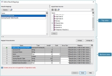
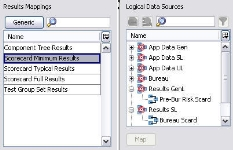
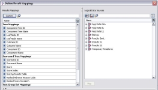

Results Mapping
To configure a process or junction node in either the Decision Process Flow or Decision Process Sequence, the user needs to use the Define Results Mapping dialog to define where the output from each process and/or junction will be mapped.
To configure a process or junction node in either the Decision Process Flow or Decision Process Sequence, the user needs to use the Define Results Mapping dialog to define where the output from each process and/or junction will be mapped. When the Define Results Mapping dialog is open and the  button is visible (the default setting), the top half of the Define Results Mapping dialog will be displayed as shown below:
button is visible (the default setting), the top half of the Define Results Mapping dialog will be displayed as shown below:
{kind=link}
It is within this area of the screen that the results logical data model is mapped to a logical data source.
Results Mapping - lists all the results data models that can be mapped for the process/junction that has been selected.
For the above example, the Define Results Mapping dialog was accessed from a Scorecard Tree process, so all the logical data models displayed above are those that could be mapped for this Scorecard Tree process.
| If the user has already mapped to a generic model, then they will not be able to map characteristics that are included in that generic results model. |
Logical Data Sources - lists all the logical data sources that currently exist within the solution and to which the logical data model can be mapped. The map button will only become active when a results logical data model and a logical data source has been selected. 
If a results logical data model already exists for the chosen results logical data model, then the logical data sources will expand to show these, enabling the user to select one of these if required.
{kind=link}
When a results logical data model for a specific process or junction is mapped to a logical data source it is created as an embedded logical data model.
For more information on the other areas of the screen see Custom Results Mapping and Mapped Characteristics.
When the Define Results Mapping dialog is open and the  button is visible, the top half of the Define Results Mapping dialog will be displayed as shown below:
button is visible, the top half of the Define Results Mapping dialog will be displayed as shown below:
{kind=link}
It is within this area of the screen that a results characteristic is mapped to a characteristic in the logical data source.
Results Mapping - lists all the individual results characteristics that can be mapped for the process/junction that has been selected.
For the above example, the Define Results Mapping dialog was accessed from a Scorecard Tree process, so all the characteristics displayed above are those that could be mapped for a Scorecard Tree process.
| If the user has already mapped to a generic model, then they will not be able to map characteristics that are included in that generic results model. |
Logical Data Sources - lists all the logical data sources and characteristics that currently exist within the solution. It is to these characteristics that characteristics from the results mapping area of the dialog will be mapped. The map button will only become active when a results characteristic and a characteristic in the logical data model is selected.
When the Custom button is selected the following icons will also be activated:
Select Logical Data Sources - opens the Logical Data Source Select dialog from where the user can limit the number of logical data sources displayed. The Select Logical Data Sources icon will indicate when the number of Logical Data Sources displayed has been reduced.
{kind=link}
{kind=link}
 Filter for Data Types - allows the user to narrow down the range of the characteristics displayed in the browsing area to a specific characteristic type (e.g. String, Integer, Float, Decimal and Date). The Filter for Data Types icon
Filter for Data Types - allows the user to narrow down the range of the characteristics displayed in the browsing area to a specific characteristic type (e.g. String, Integer, Float, Decimal and Date). The Filter for Data Types icon  will indicate when the range of characteristic types displayed has been narrowed down.
will indicate when the range of characteristic types displayed has been narrowed down.
Show Table View – toggle display of logical characteristics between tree or table view. The table view shows the full characteristic name, including path name.
{kind=link}
For more information on the other areas of the screen see Generic Results Mapping and Mapped Characteristics.
A Decision Process Sequence provides business users with a user configurable mechanism for determining which processes will be executed at the leaf nodes of a Decision Process Tree. Unlike other trees, such as a Scorecard Tree or a Treatment Tree where different scorecards or different treatment tables are executed, the Decision Process Tree executes more than one type of process depending on what has been defined in the decision process sequence. Creating a decision process sequence involves adding processes to the decision process sequence and defining the mappings required to enable monitoring and runtime processing. It is the process node that represents the rules that are applied to a record at that particular stage of the processing.
| If you want to stamp out a results data model you need adequate permissions to allow you to edit the logical data source. |
To configure a process the user needs to define where the output from each process and/or junction will be mapped. The type of process added affects the mappings required since at runtime each process will generate different values. When a process is added to a process node the user needs to right click on the node and select Results Mapping. The Define Results Mapping dialog will open where the user can choose to
- map a results logical data model to a logical data source (Generic)
- individually map specific results characteristics to individual characteristics that are already defined in the logical data source (Custom)
| Irrespective of what method is chosen the system will not allow the user to map characteristics twice or select to map an individual characteristic that has already been mapped from within a model. | |
|
Assign Values is not a component. When the user adds it to the assign value Decision Process Sequence it is when the characteristic is dragged to the column in the Decision Process Tree that the mapping is configured. |
The results logical data model for the specific process is added to the logical data source as an embedded logical data model.
For more information see Generic Results Mapping, Custom Results Mapping and Mapped Characteristics
To define the mappings required for the process
- With the decision process sequence editor open and a process added, select the process that has been added to the process node, then right click and select Results Mapping.
The process or junction node does not have to be fully configured, you can map a sketched process or junction as long as the place holder has been defined. The system will display the Define Results Mapping dialog.
The Decision Setter process and the Scorecard process will display more than one results logical data model in the Results Mapping panel.
See Mappings Required for more information on the contents of these logical data models. - With the
 button visible, in the Results Mapping panel, select the results logical data model and the logical data source where you wish the logical data model to be added.
button visible, in the Results Mapping panel, select the results logical data model and the logical data source where you wish the logical data model to be added. - Click on the Map button.
The results logical data model will be listed below the logical data source you have selected and prefixed with the name of the process node.
The characteristics contained in the results logical data model will be listed in the Mapped Characteristics area. - Rename the results logical data source.
- Click on the Save button.
- Click on the Close button to close the Define Results Mapping dialog.
| Once the results logical data model has been mapped the results logical data model can be renamed. |
| Only one results logical data model type can be mapped for each process; once one has been selected you will not be able to map another results logical data source if the one that is currently mapped has been unmapped. |
The results mappings for the process object will now be defined to enable runtime processing.
A Decision Process Sequence provides business users with a user configurable mechanism for determining which processes will be executed at the leaf nodes of a Decision Process Tree. Unlike other trees, such as a Scorecard Tree or a Treatment Tree where different scorecards or different treatment tables are executed, the Decision Process Tree executes more than one type of process depending on what has been defined in the decision process sequence. Creating a decision process sequence involves adding processes to the decision process sequence and defining the mappings required to enable monitoring and runtime processing. It is the process node that represents the rules that are applied to a record at that particular stage of the processing.
To configure a process the user needs to define where the output from each process and/or junction will be mapped. The type of process added affects the mappings required since at runtime each process will generate different values. When a process is added to a process node the user needs to right click on the node and select Results Mapping. The Define Results Mapping dialog will open where the user can choose to
- map a results logical data model to a logical data source (Generic)
- individually map specific results characteristics to individual characteristics that are already defined in the logical data source (Custom)
| Irrespective of what method is chosen the system will not allow the user to map characteristics twice or select to map an individual characteristic that has already been mapped from within a model here. |
The results logical data model for the specific process is added to the logical data source as an embedded logical data model.
For more information see Generic Results Mapping, Custom Results Mapping and Mapped Characteristics
To map a results characteristic required for the process or junction
- With the decision process sequence editor open and a process added, select the process that has been added to the process node, then right click and select Results Mapping.
The system will display the Define Results Mapping dialog. - With the
 button visible, in the Results Mapping panel, select the results characteristic you wish to map.
button visible, in the Results Mapping panel, select the results characteristic you wish to map. - In the Logical Data Sources area, locate the logical data model that contains the characteristic that you wish the results to be mapped to.
- Click on the Map button.
The results characteristic will be listed in the Mapped Characteristics area. The name in the Mapping column will details the logical data source and characteristic to which the characteristic has been mapped. - Repeat steps 2 to 4 to map all the results characteristics that are required.
- Click on the Save button.
- Click on the Close button.
The results mappings you have defined will now enable runtime processing.
Output from each process in a decision process flow must be mapped to specific characteristics in the logical data source if results need to be returned. The type of process added affects the mappings required since at runtime each process will generate different values. To change the results logical data mapping used, the user will need to unmap the mapped characteristics before selecting other characteristics to map.
To unmap the results logical data model for the process
- With the decision process flow editor open and a process added, select the process that has been added to the process node.
- Right click on the process node and select Results Mapping.
- Click on the Unmap All button.
The results logical data model will now be available for selection in the Results Mapping area of the screen.
| Although the mappings will be removed, the logical data model will not be removed from the logical data source. If you wish the results logical data model to be removed from the logical data source you will need to access the Logical Data Source editor for the particular logical data source and remove it. |